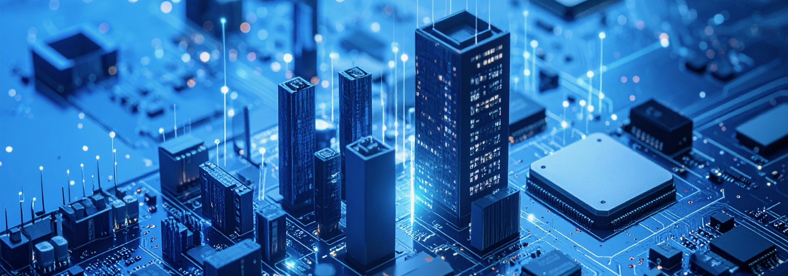

화인전자 홈페이지에 오신 것을 환영합니다
저희 화인전자 주식회사는 1994년 화인실업으로 시작하여, 30여 년 가까이 전자부품 제조 분야에서 꾸준히 성장해 온 전문 기업입니다. 오랜 업력과 함께 축적된 기술력, 신뢰받는 품질, 안정된 생산 체계를 바탕으로 2021년 화인전자 주식회사로 사명을 변경하며 새로운 도약을 준비하였습니다. 저희 회사는 전자기기 제조의 핵심이 되는 정밀 부품을 생산하여, 조립 및 완제품 생산을 담당하는 다양한 파트너 기업에 공급하고 있습니다. 부품의 품질이 전체 제품의 성능과 신뢰성에 직접적인 영향을 미치는 만큼, 당사는 정확한 사양 관리, 철저한 품질 검사, 납기 준수를 최우선 가치로 삼고 있습니다. 국내 공장에는 첨단 자동화 설비와 숙련된 인력을 갖추고 있으며, 설계부터 양산까지의 모든 공정을 체계적으로 관리하고 있습니다. 더불어 중국을 포함한 해외 공장을 직접 운영함으로써 글로벌 생산 및 납품 체계를 구축하고 있으며, 고객사의 다양한 니즈에 유연하고 신속하게 대응하고 있습니다. 앞으로도 화인전자는 ‘신뢰할 수 있는 부품 파트너’로서, 고객과 함께 성장하는 동반자가 되겠습니다. 지속적인 기술 혁신과 품질 개선을 통해, 전자산업의 미래를 함께 만들어 가겠습니다.